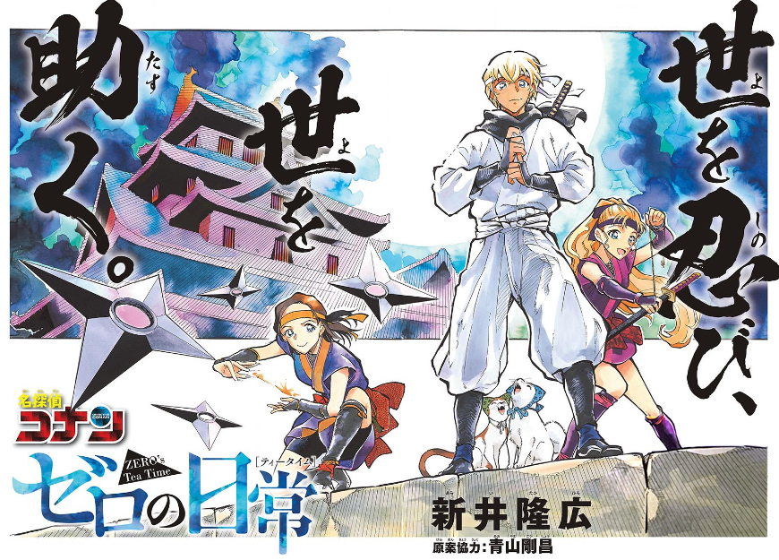
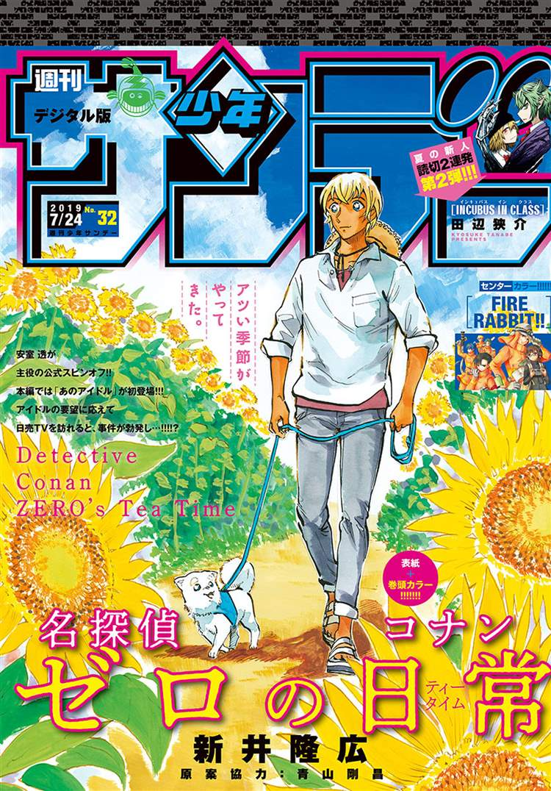
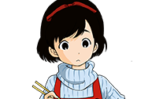
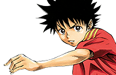
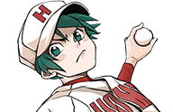
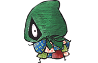
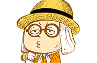

This week's Weekly Shonen Sunday posting order & comments from the author.

Question of the week
"If you could give yourself two names what would they be?"
Tonikaku Cawaii

The man who returned to Jupiter.
SWITCH
The Panther of Southern Seas.
Souboutei Kowasubeshi

Jyuhiro Fujitaka or Mangou...or “I'm already so full”. (TN- The first is like “The Eagle of Fuji” and the second takes a character from “manga” and “strong.”
Fire Rabbit!!
I'd be too shy to give myself a name, so I'd take a vote from others instead!
Yuko sae tatakaeba

The Shougi loving Mangaka!
Sokyuu no Ariadne
Shiwasuri (TN- The kanji making up this word are “master” and “running”.)
Major 2nd

Wait, what are you talking about, I don't get it.
Amano Megumi wa suki darake!

“Sunday's Ass sommelier”.
Kimi wa 008

The fighting mangaka?
Maoujo de Oyasumi

“The foremost lover of Bear crotches in the world”!! Kumanomata Kagiji!!
Daiku no Hato

The head editor refers to me as a hated creator.
Tantei Xeno to Nanatsu no Satsujin Misshitsu

I'm too embarassed to come up for something with myself, so I'm passing on this question. Sorry.
Maiko-san chi no Makanai-san

Potato Chips. If they're tasty enough they can cause one to forget their own physical problems.
Aozakura Bouei daigakkou Monogatari

Warrior of Light.
Be Blues!

Giving myself two names is incredibly painful...
Incubus in Class
There was a time where I wanted to be a professor, but I was discouraged by how difficult it was to be a trainee teacher.
Komi-san wa komyusho desu

Anyone who wants two names of their own shouldn't use their real names as a pen-name!
Chrono Magia: Infinity Gear
Godspeed Azuma.
Ponkotsu-chan Kenshochuu
The man possessed by esper power manga.
Anonatsu 1959

And with this the serialization is done. I thank everyone who read it!
Zettai Karen Children

If it's self proclaimed, is it a pen name? Or a Stage name...?
Hoankan Evans no Uso ~Dead or Love~

“The passionate neighbor” is what I'd like to say, but “Smiling fatty” is probably the best I can do.
Gofun go no Sekai
“Fast asleep...” (lol)
Undine ha Kyou mo Koi wo suru ka?
“Misu” has “3 (San)” in it so I'd attach that to more things like “Three stars” “Three treasures” “Third place” and so on.
Youkai Giga

Teflon manufacturer.
Tokaichi Hitoribocchi Nouen

Fire Starter.
Detective Conan: Zero's Tea Time
Takahiro Arai
Crystal Holder.